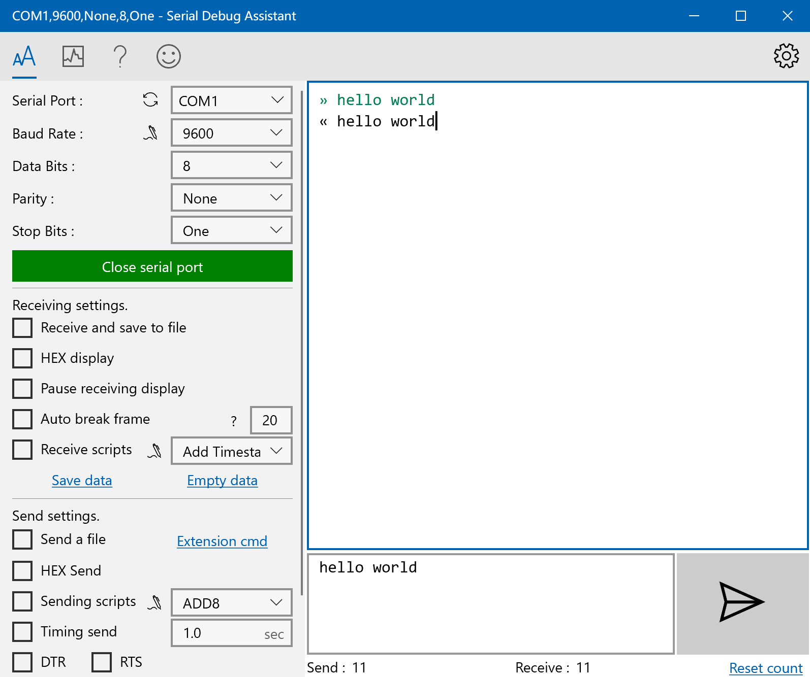
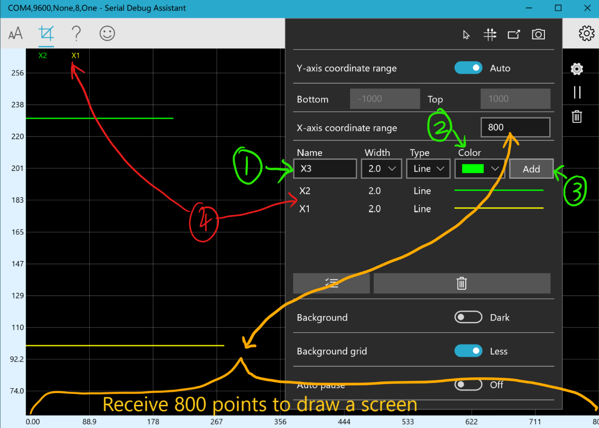

Very good win10 COM Port Debug
- Receive and display serial port data.High-speed reception is stable, smooth, no freezes, no
data loss.
- The data can be sent or displayed as "character string" or "HEX". You can use JavaScript scripts
to process
the data.
- Automatic frame break function, Automatically insert a line break between two data packets, the data received multiple times will no longer be crowded
together, it is easier to distinguish the data each time. Make the inspection and analysis of the data clearer and more
intuitive.
- Waveform display function. The data sent according to the protocol can be displayed as a
waveform. Supports simultaneous
drawing of multiple waveforms. The ordinate is automatically adjusted to facilitate observation.
And support the
waveform review function and screenshot function.
- Support multiple character encoding "ASCII","GB2312","UNICODE","UTF-8","BIG5","shift_jis"
- The serial port baud rate can be selected as 300bps-1500000bps. (Hardware support is required
when the baud
rate>115200). Support custom serial port baud rate at the same time
- Support extended commands, up to 600 groups of custom commands. Convenient for debugging
equipment
- Custom command list, Combine multiple extended commands into a list. Just click once to send, automatically execute each command in the list
- Perfectly adapted to high score screens. There is no blurring problem for most software in high
score screens.
- A good helper for COM debugging


Download Serial Debug Assistant